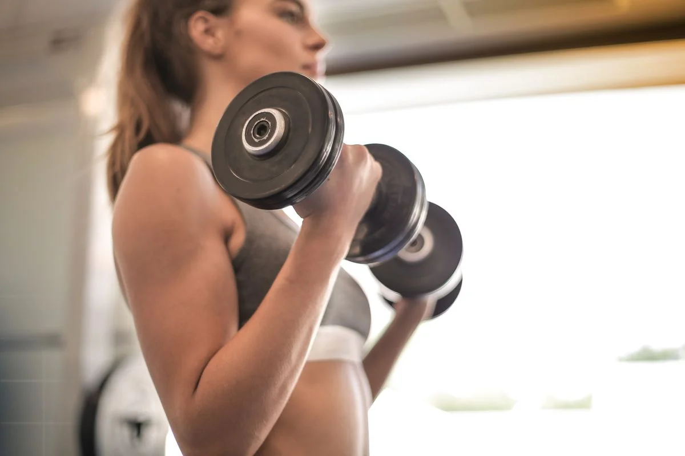
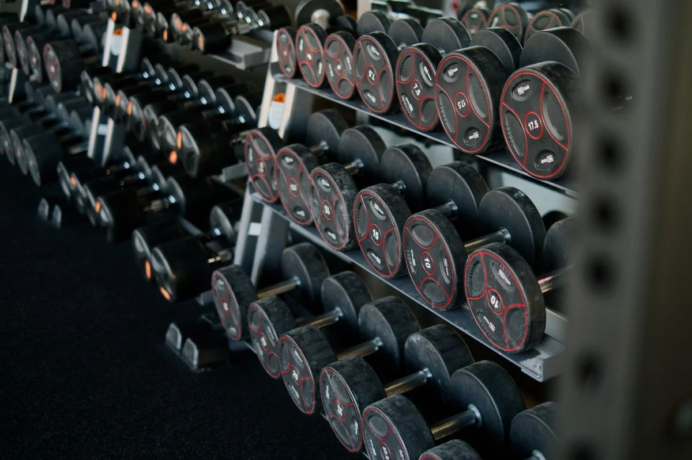
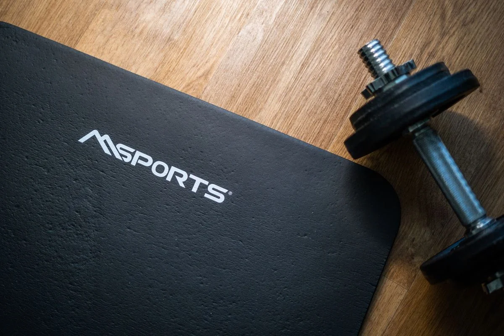
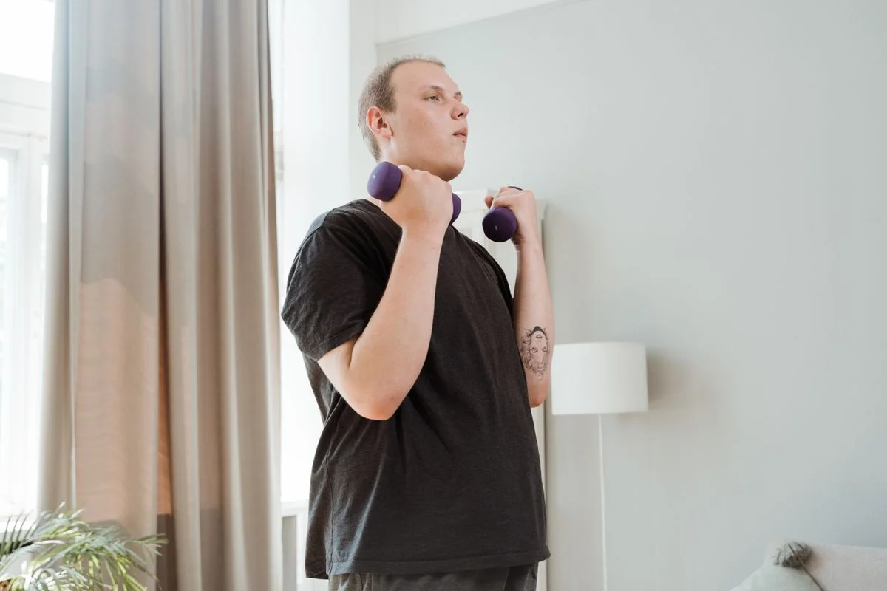

Best Adjustable Dumbbells for a Small Home Gym: What Actually Matters Before You Buy
What should I check before buying adjustable dumbbells?
Check four things: the weight range, how the weight changes, the footprint, and whether it can grow with you. Most home lifters need 5 to 50 lb per dumbbell. A dial, twist handle, pin or switch all work — what matters is that it changes fast and locks securely. Then measure where it will live: one pair replaces a whole rack, but the longest sets still need real floor space.
Our pick: PowerBlock Elite EXP Stage 1 (5–50 lb per hand) — the finest steps in this guide (2.5 lb increments with the adder weights), a magnetic selector pin, and an expansion path to 70 or 90 lb per hand with kits sold separately, backed by a 5-year limited residential warranty.
Check price on AmazonAffiliate link to be added after approval. No price shown here — check it on Amazon.
At a glance
| Product | Best for | Check price |
|---|---|---|
| PowerBlock Elite EXP Stage 1 | Best overall — fine steps, expands to 90 lb | Link pending |
| NordicTrack 55 Lb. Select-A-Weight | A little more top-end weight, 10–55 lb | Link pending |
| Core Home Fitness Adjustable Dumbbell Set | Simplest change — one twist of the handle | Link pending |
| Snode AD80 | Heaviest here — 10–80 lb, cast iron | Link pending |
| REP Fitness QuickDraw (LB) | Fastest changes — flip a switch | Link pending |

We may earn a commission if you buy through links on this page. As an Amazon Associate I earn from qualifying purchases.
What you need
Five adjustable dumbbell sets, each verified live on the maker's own page on 11 November 2026. No prices here on purpose — check the price on Amazon, and check the weight range against the lifts you actually do.
PowerBlock Elite EXP Stage 1 (5–50 lb per hand)
The finest steps in this guide: 5 to 50 lb per hand in 2.5 lb increments using the two adder weights in each handle, selected with a magnetic selector pin. Stage 2 and Stage 3 expansion kits (sold separately) take the same handles to 70 or 90 lb per hand, and PowerBlock lists a 5-year limited residential warranty.
Watch out: It is a square block, not a fixed-dumbbell shape, so it feels different in the hand. The expansion kits are sold separately — the Stage 1 pair on its own tops out at 50 lb per hand.
Check price on AmazonAffiliate link to be added after approval. No price shown here — check it on Amazon.
NordicTrack 55 Lb. Select-A-Weight Dumbbells
Adjusts from 10 to 55 lb per dumbbell across 15 weight settings, with a smooth weight selection system and a storage tray included. The extra 5 lb over the usual 50 lb ceiling is useful if your presses and rows are already near the top of a 50 lb set.
Watch out: It starts at 10 lb — there is no 5 lb setting, because the handle bars themselves weigh 10 lb. There is no expansion path beyond 55 lb per dumbbell, so check the ceiling before you buy.
Check price on AmazonAffiliate link to be added after approval. No price shown here — check it on Amazon.
Core Home Fitness Adjustable Dumbbell Set (5–50 lb)
The simplest mechanism here: twist the handle and the weight changes in 5 lb steps from 5 to 50 lb per dumbbell, with no knobs, levers or pins to fumble with. Each dumbbell is 14.5 in long at 50 lb and shortens to 9.3 in at 5 lb, so it takes up less room at light weights. Two aluminium cradles are included, and Core lists a 2-year parts warranty.
Watch out: Steps are 5 lb only — no 2.5 lb option for small progressions. The stand is sold separately, and Core states these dumbbells are not designed to be dropped.
Check price on AmazonAffiliate link to be added after approval. No price shown here — check it on Amazon.
Snode AD80 Adjustable Dumbbells (10–80 lb)
The heaviest set in this guide: 10 to 80 lb per dumbbell in 8 settings, changed with a single dial while the dumbbell sits in its cradle. All cast iron — plates, handle and cradle — with a fixed knurled handle that does not move when you adjust it. Snode describes it as drop-proof up to 32 inches and lists the dumbbell at 18.11 in long.
Watch out: The steps are 10 lb, the coarsest in this guide — optional magnetic weight plates are the maker's answer for smaller jumps. It also starts at 10 lb, and at 18.11 in long it is the longest dumbbell here, so measure your space.
Check price on AmazonAffiliate link to be added after approval. No price shown here — check it on Amazon.
REP Fitness QuickDraw Adjustable Dumbbell (LB) (5–60 lb)
The fastest change here: flip the Lock-N-Load steel switches to change weight in 5 lb steps, from 5 lb up to 60 lb per dumbbell. Pairs are sold in 30, 40, 50 or 60 lb versions, and add-on weights take a smaller pair up to 60 lb per dumbbell, so you can start light and grow. The handle is 32 mm, fully knurled, and does not rotate during use.
Watch out: The top weight depends on which pair you buy — a 30 lb pair only reaches 60 lb per dumbbell with the add-on weights. Check which pair is in the listing before you buy, and check the weight markings on the cradle in good light.
Check price on AmazonAffiliate link to be added after approval. No price shown here — check it on Amazon.
How to pick
- Pick your range first. Write down the heaviest weight you lift now for presses and rows, and the lightest you need for curls and raises. If your heaviest lift is already above 50 lb per hand, a 50 lb set will run out on you — look at the Snode AD80 or a set with an expansion kit.
- Try the mechanism in your head. Dial, twist handle, pin or switch — they all change the weight while the dumbbell sits in its cradle or tray. What matters is that it locks securely and changes fast enough for supersets. If a mechanism needs two hands or a fiddly pin, it will slow every workout down.
- Measure the footprint at full weight. Some dumbbells grow as you add weight — Core's goes from 9.3 in at 5 lb to 14.5 in at 50 lb — and the Snode AD80 is 18.11 in long. Measure the floor space for the pair plus their cradles or trays, not just the dumbbells on their own.
- Check the ceiling, not just the floor. Can the set grow? PowerBlock sells Stage 2 and 3 kits to 70 or 90 lb, and REP sells add-on weights to 60 lb. NordicTrack and Core top out where they start. Buying a set you will outgrow in a year costs more than buying the right ceiling once.


Photos still needed
Photos in place for the hero, the rack comparison, the mat and the home workout below (see Photo credits). Still missing — needs real at-home photos of the actual models:
- Each set in this guide sitting in its own cradle or tray, at home
- A close-up of each adjustment mechanism — dial, twist handle, pin and switch — in use
- Real test photos of the sets in this guide, taken at home
Comparison
| Product | Best for | What to check before you buy | Watch out for |
|---|---|---|---|
| PowerBlock Elite EXP Stage 1 | Best overall — fine steps, expands to 90 lb | Range 5–50 lb per hand, 2.5 lb steps, magnetic pin, 5-year warranty | Block shape; expansion kits sold separately |
| NordicTrack 55 Lb. Select-A-Weight | A little more top-end weight, 10–55 lb | 15 settings, storage tray included, smooth selection system | Starts at 10 lb; no expansion beyond 55 lb |
| Core Home Fitness Adjustable Dumbbell Set | Simplest change — one twist of the handle | 5–50 lb in 5 lb steps, 14.5 in at 50 lb, cradles included | 5 lb steps only; stand sold separately; not designed to be dropped |
| Snode AD80 | Heaviest here — 10–80 lb, cast iron | 8 settings, single dial, fixed knurled handle, 18.11 in long | 10 lb steps; starts at 10 lb; longest set here |
| REP Fitness QuickDraw (LB) | Fastest changes — flip a switch | 5–60 lb per dumbbell, 5 lb steps, add-on weights, 32 mm knurled handle | Top weight depends on the pair you buy; check the cradle markings in good light |
How we picked
These products were verified live on the manufacturers' own pages on 11 Nov 2026; they were NOT part of the original 25-product score set (that set covered the Bowflex SelectTech 552, NordicTrack T Series 10 and Concept2 RowErg in Guide C). The Bowflex SelectTech 552 is the lead product in Guide C, so it is not repeated as a main product here.
| Products scored in our research | Products in this guide | Hands-on tests run |
|---|---|---|
| 25 (original four-area set) | 5 | 0 — none yet |
What we have not done yet: no product in this guide has been tested hands-on by us. When we test one at home, this box will say so, with the date.
Troubleshooting
The weight will not change
Set the dumbbell fully back in its cradle or tray first — every set in this guide adjusts while it is seated, not while you are holding it. Check the dial, twist handle, pin or switch is fully in its detent, then lift and check the weight marking before you start the set.
The plates rattle or feel loose
Put the dumbbell back in its cradle and re-select the weight, making sure the selector is fully engaged. Do not lift a dumbbell that feels loose or has a plate sitting proud of the stack — re-seat it and check again. If it still rattles, check the maker's instructions for that model before using it.
The dumbbell feels too long or hits your legs
Check the length at the weight you are actually using — some sets grow as weight is added, so a dumbbell that is short at 5 lb can be much longer at 50 lb. If the length gets in the way on presses or rows, a shorter set at the same weight, like the Core at 14.5 in, may suit you better.

Frequently asked questions
What weight range do I need for a home gym?
For most home lifters, 5 to 50 lb per dumbbell covers presses, rows, curls and lunges. If you already press or row above 50 lb per hand, pick a set with a higher ceiling — the Snode AD80 goes to 80 lb per dumbbell — or one with an expansion kit, like the PowerBlock Elite EXP or the REP QuickDraw.
Are adjustable dumbbells safe to drop?
Most makers say adjustable dumbbells are not designed to be dropped — Core Home Fitness says so on its own product page. Snode describes the AD80 as drop-proof up to 32 inches, but that is the maker's claim, not something we have tested. Whatever you buy, follow the maker's handling instructions and train over a mat or rubber flooring.
Do adjustable dumbbells replace a full rack?
For most home training, yes: one adjustable pair replaces 8 to 16 pairs of fixed dumbbells, according to the makers in this guide. The trade-off is the ceiling — a fixed rack goes heavier — and the increments: some adjustable sets jump in 5 or 10 lb steps, where a rack would have every weight in between.
Sources
- PowerBlock — Elite EXP Adjustable Dumbbells (Stage 1, 5–50 lb per hand; expansion kits to 70/90 lb; 5-year limited residential warranty): https://powerblock.com/products/elite-exp-adjustable-dumbbells?variant=44458386718911&country=UY¤cy=UYU
- NordicTrack — 55 Lb. Select-A-Weight Dumbbells (10–55 lb, 15 adjustments, storage tray included): https://www.nordictrack.com/product/55-lb-select-a-weight-dumbbell-set#specs
- Core Home Fitness — Adjustable Dumbbell Weight Set, 5–50 lbs. (twist-handle adjustment, 5 lb increments, 14.5 in at 50 lb, 2-year parts warranty): https://corehomefitness.com/products/adjustable-dumbbell-set
- Snode Fitness US — Adjustable Dumbbells 80Lb, AD80 (10–80 lb, 8 settings, single-dial adjustment, cast iron, 18.11 in long): https://www.snodesport.com/products/ad-80-quick-adjusting-dumbbells
- REP Fitness — QuickDraw Adjustable Dumbbell (LB) (5–60 lb per dumbbell; pairs in 30/40/50/60 lb versions; add-on weights to 60 lb): https://Repfitness.com/collections/weightlifting/products/quickdraw-adjustable-dumbbell-lb
- REP Fitness — REP x PÉPIN vs QuickDraw Adjustable Dumbbell Sets (QuickDraw weight span, Lock-N-Load switches, 32 mm handle): https://nl.repfitness.com/blogs/guides/rep-x-pepin-vs-quickdraw-adjustable-dumbbells
- Pexels photos: Andrea Piacquadio, https://www.pexels.com/photo/woman-in-gray-sports-bra-holding-black-dumbbell-3757376/; Ivan S, https://www.pexels.com/photo/black-and-red-dumbbells-4162451/; Sebastian Pociecha, https://www.pexels.com/photo/photo-of-dumbbell-near-black-mat-4065936/; MART PRODUCTION, https://www.pexels.com/photo/man-in-black-crew-neck-t-shirt-exercising-using-dumbbells-8846456/
Keep going
 Prep & Power
Prep & PowerPortable Power Stations for a 72-Hour Home Kit: What Actually Matters Before You Buy
What actually matters when buying a portable power station for a 72-hour home kit: size, recharge, and what must stay on.
Read the guide → Kitchen & Cleaning
Kitchen & CleaningRobot Vacuum and Mop, Tested in a Real Home: What to Check Before You Buy
What to check before you buy a robot vacuum and mop: thresholds, pet hair, mop contact, and noise.
Read the guide → Pet Tech
Pet TechAutomatic Litter Boxes, Tested at Home: What a Cat Owner Should Know Before You Buy
What a cat owner should know before buying an automatic litter box: size, noise, running costs, and the cat.
Read the guide →